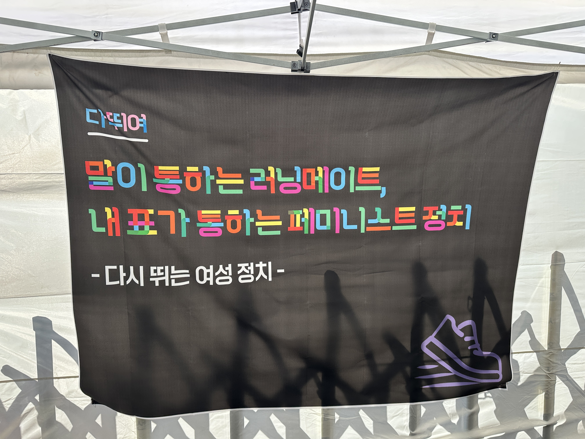

Activities
주요 활동
🗓
+

2026. 03. 08
여성의 날 기념 숫자런 이벤트 개최
3.1km(기초단체장 여성비율 3.1%), 5.5km(5:5 동수는 민주주의의 기본), 20km(지방의회 비례의원 비율 20% 확대) 등 여성정치에 의미있는 숫자들만큼 인증런을 진행했습니다.
🗓
+
2026. 03. 07
제41회 한국여성대회 부스 참가
"말이 통하는 러닝메이트, 내 표가 통하는 페미니스트 정치"
페미니스트 정치+러닝 친구를 만날 수 있는 만남의 장으로 다뛰여를 소개하고, 여성마라톤 때 사용할 슬로건 투표를 받았습니다.
페미니스트 정치+러닝 친구를 만날 수 있는 만남의 장으로 다뛰여를 소개하고, 여성마라톤 때 사용할 슬로건 투표를 받았습니다.

⚡
+
2026. 01. 07
다뛰여 2026 워킹그룹 첫 모임 시작
다뛰여 공식 로고 제작, 홈페이지 및 SNS를 통한 기록과 홍보 진행, 다뛰여 참가 행사 및 자체 이벤트런 등을 기획 중입니다.
📰
+

2025. 11. 30
다뛰여가 뽑은 올해의 여성정치 10대 뉴스
2025년에 있었던 여성정치 뉴스를 모아 중요도에 따라 총 10개의 뉴스를 선정했습니다.
🎉
+

2025. 10. 19
다뛰여 1주년 기념런 앤 파티
정기런 장소에서 미니 운동회, 페미 러너를 위한 바자회 및 파티, 1주년 기념 토크를 진행했습니다.
🏅
+

2025. 05. 03
제25회 여성마라톤 참가 및 완주
상암 평화의공원 평화광장에서 열린 제25회 여성마라톤에 다뛰여 크루들이 참가해 완주했습니다.
🏃
+

2025. 04. 06
윤석열 전 대통령 파면런 11.22km
헌법재판소가 파면을 결정한 시각인 오전 11시 22분을 기념해 11.22km를 함께 달렸습니다.
✊
+

2025. 03. 08
3.8 여성1만인 선언 조직 "응원봉을 의사봉으로!"
내란 극복과 민주주의 회복을 위한 1만인 서명을 받아 제40회 한국여성대회에서 선언문을 낭독했습니다. (전문은 여기를 클릭)
🌱
+
2024. 10. 20
다뛰여 창립 및 첫 러닝 시작
창립자: 권김현영, 장혜영, 박지현